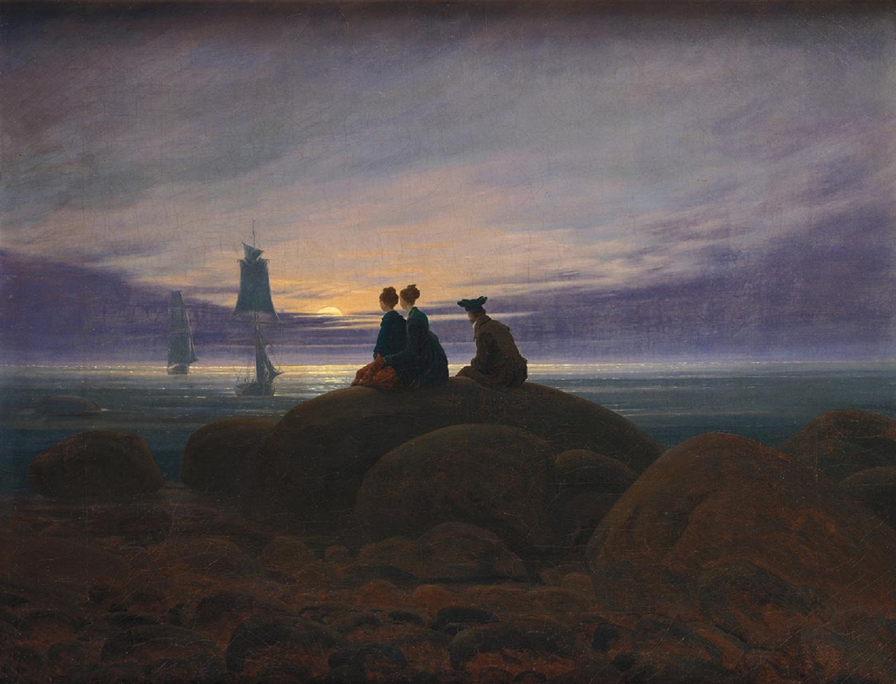
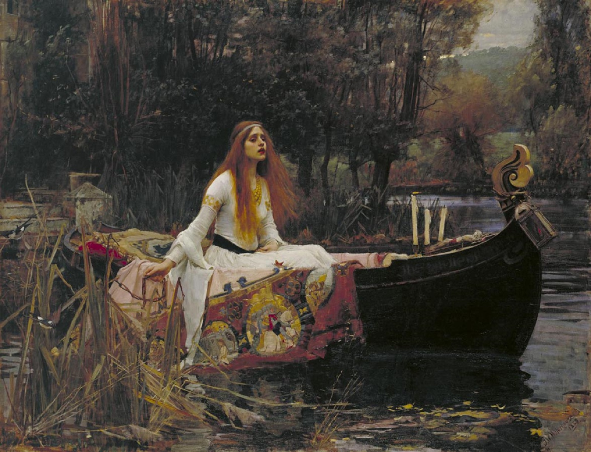
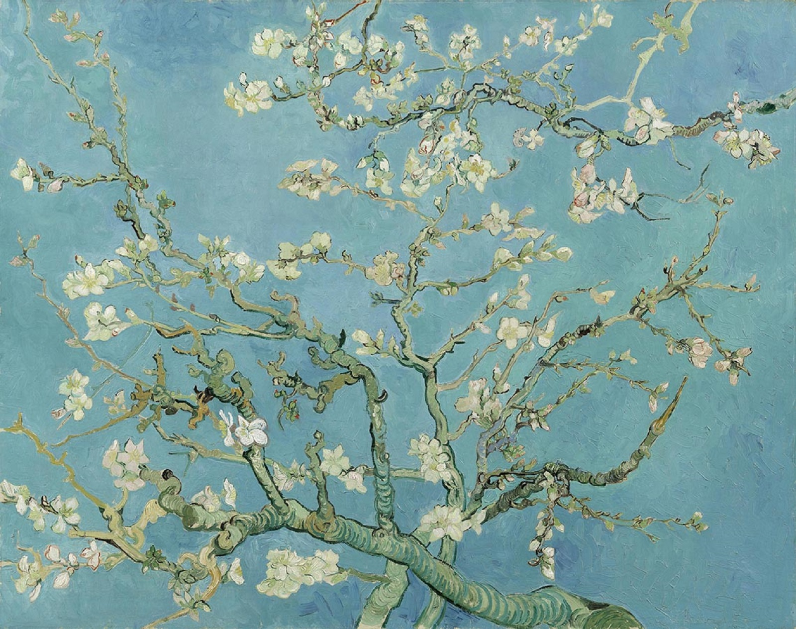
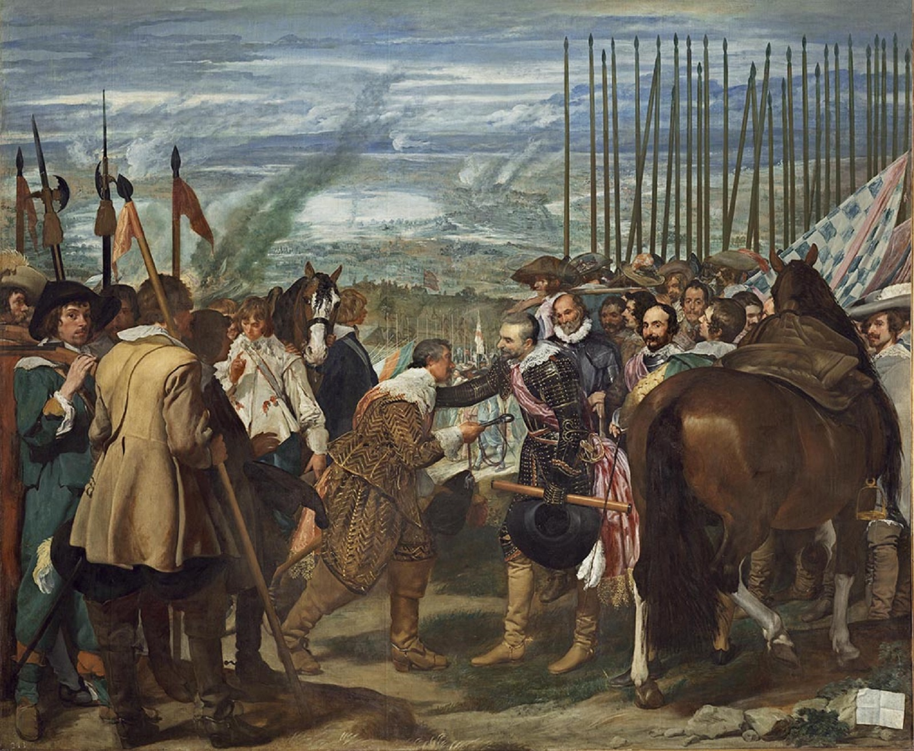
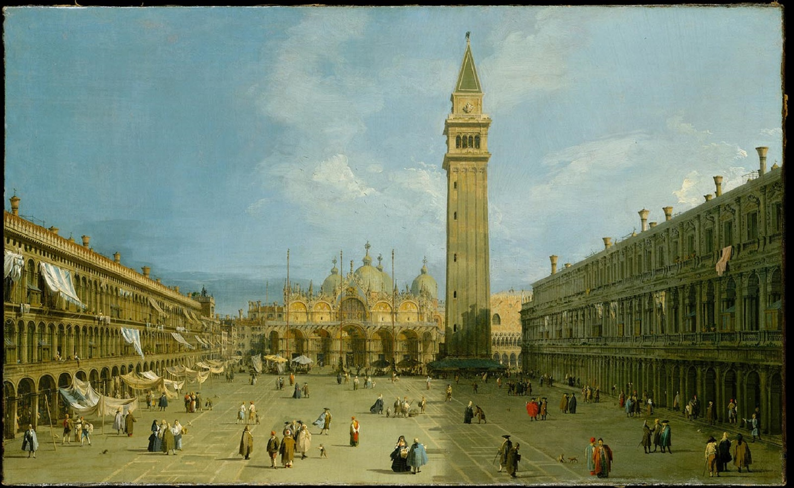

<!DOCTYPE html>
<html>
    <head>
        <meta charset="UTF-8">
        <link href="../css/reset.css" rel="stylesheet" type="text/css">
        <link href="../css/Artstore.css" rel="stylesheet" type="text/css">
        <title>Art store</title>
    </head>
</html>
<body>
    <header>
        <nav id="logo&solgan">
            <span class="logo">Art Store</span>
            <span class="slogan">Find Beautiful</span>
            <ul class="head_option">
                <li><a href="#">首页</a></li>
                <li><a href="GoodsDetail.html">商品详情</a></li> <!--商品详情HTML待填-->
                <li><a href="#">注册</a></li> <!--注册JS待填-->
                <li><a href="#">登录</a></li> <!--登录JS待填-->
                <li><a href="SearchGoods.html">搜索</a></li> <!--搜索HTML待填-->
            </ul>
        </nav>
            <!--
            <ul class="head_option_after_login">
                <li><a href="#">首页</a></li>
                <li><a href="GoodsDetail.html">商品详情</a></li> <!--商品详情HTML待填
                <li><a href="UserInformation.html">dyc</a></li> <!--用户信息HTML待填
                <li><a href="#">登出</a></li> <!--登出JS待填
                <li><a href="SearchGoods.html">搜索</a></li> <!--搜索HTML待填
            </ul> 
            -->
    </header>

    <div id="recommand">
        <a id="ref1" class="ref_num">1</a>
        <a id="ref2" class="ref_num">2</a>
        <a id="ref3" class="ref_num">3</a>
        <a id="ref4" class="ref_num">4</a>
        <a id="ref5" class="ref_num">5</a>
        <div id="recommand_image" class="animation">

            <!--首页的五张照片 利用animation实现变换-->
            
            
            
            
            

            <ul id="recommand_inc">

                <li>
                    <h1>Moonrise over the Sea</h1>
                    <p class="author">Caspar David Friedrich</p>
                    <p class="image_inc">
                        Three young people, two women side by side and a man further back, 
                        are sitting on a large boulder by the sea, 
                        silhouetted against the sky as they watch the moon rising to the east above a band of clouds. 
                    </p>
                </li>
            
                <li>
                    <h1>The Lady of Shalott</h1>
                    <p class="author">John William Waterhouse</p>
                    <p class="image_inc">
                        The painting has the precisely painted detail and bright colours associated with the Pre-Raphaelites.
                        The Lady of Shalott pictures the Lady, who is the main character in Tennyson's poem, 
                        also titled The Lady of Shalott (1842), who is facing her destiny. 
                        The Lady has made her way to this small boat with a few of her belongings.
                    </p>
                </li>
                    
                <li>
                    <h1>Almond Blossoms</h1>
                    <p class="author">Vincent van Gogh</p>
                    <p class="image_inc">
                        "In his flowering trees, Vincent attained a sense of spontaneity, 
                        freeing himself from the strict self-analytical approach he took in Paris. 
                        In Almond Tree in Blossom, Vincent used the light, broken strokes of impressionism and the dabs of colour of divisionism for a sparkling surface effect. 
                    </p>
                </li>

                <li>
                    <h1>The Surrender of Breda</h1>
                    <p class="author"> Diego Velázquez</p>
                    <p class="image_inc">
                        The extraordinary respect and dignity Spinola demonstrated towards the Dutch army is praised through The Surrender of Breda. 
                        Spinola “had forbidden his troops to jeer at, or otherwise abuse the vanquished Dutch, and, according to a contemporary report, 
                        he himself saluted Justin.” The painting demonstrates the glimpses of humanity that can be exposed as a result of the war and commends Spinola’s consideration for Nassau and the Dutch army.                        
                    </p>
                </li>    

                <li>
                    <h1>The Piazza San Marco in Venice</h1>
                    <p class="author"> Canaletto</p>
                    <p class="image_inc">
                        This early work, which nonetheless displays the most outstanding features of his style, 
                        depicts the most famous square in Venice from a high viewpoint, thus ensuring a broader frame for the composition.                        
                    </p>
                </li>    
                
            </ul>
        </div>
    </div>

    <main>
            <figure tabindex="1">
                <a href="GoodsDetail.html">
                    
                </a>
                <figcaption>
                    <p>
                        Bonaparte’s gloveless right hand points up towards the invisible summit, 
                        more for us to follow, one feels, than the soldiers in the distance. 
                        Raised arms are often found in David’s work, 
                        though this one is physically connected with the setting, 
                        echoing the slope of the mountain ridge. 
                        Together with the line of his cloak, 
                        these create a series of diagonals that are counterbalanced by the clouds to the right. 
                        The overall effect is to stabilise the figure of Napoleon.
                    </p>
                </figcaption>
                <p class="details"><a href="GoodsDetail.html">View Details</a></p>
            </figure>

            <figure tabindex="2">
                <a href="GoodsDetail.html">
                    
                </a>
                <figcaption>
                    <p>
                        "This morning I saw the country from my window a long time before sunrise, 
                        with nothing but the morning star, which looked very big," 
                        van Gogh wrote to his brother Theo, from France. 
                        Rooted in imagination and memory, The Starry Night embodies an inner, 
                        subjective expression of van Gogh's response to nature. 
                        In thick, sweeping brushstrokes, a flamelike cypress unites the churning sky and the quiet village below.
                        The village was partly invented, and the church spire evokes van Gogh's native land, 
                        the Netherlands.                        
                    </p>
                </figcaption>
                <p class="details"><a href="GoodsDetail.html">View Details</a></p>
            </figure>
            
            <figure tabindex="3">
                <a href="GoodsDetail.html">
                    
                </a>
                <figcaption>
                    <p>
                        The painting was one of the first portraits to depict the sitter in front of an imaginary landscape, 
                        and Leonardo was one of the first painters to use aerial perspective.
                        The enigmatic woman is portrayed seated in what appears to be an open loggia with dark pillar bases on either side.
                        Winding paths and a distant bridge give only the slightest indications of human presence. 
                        Leonardo has chosen to place the horizon line not at the neck, 
                        as he did with Ginevra de' Benci, but on a level with the eyes, 
                        thus linking the figure with the landscape and emphasizing the mysterious nature of the painting.
                    </p>
                </figcaption>
                <p class="details"><a href="GoodsDetail.html">View Details</a></p>
            </figure>
    </main>

    <footer>
        <div class="copyright">
            <p>copyright © 2019 Art Store. All rights reserved</p>
        </div>
    </footer>

</body>